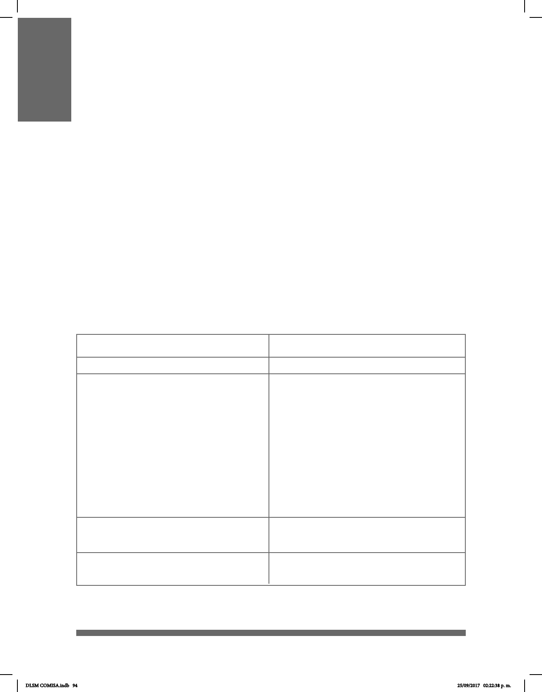

94
RASGOS NO MANUALES:
EXPRESIÓN FACIAL Y GESTOS
Un rasgo no manual (RNM) de la lengua de señas es la expresión facial, los gestos y los
movimientos corporales.
Los RNM se usan en la LSM como un marcador gramatical muy importante: se producen
simultáneamente al señar para dar signicado lingüístico y, por tanto, son equivalentes en
español a los rasgos suprasegmentales de la lengua oral: tono, timbre, altura, intensidad
y velocidad.
Existen gestos universales, es decir, gesticulaciones que no varían de una cultura a otra
y que generalmente expresan alegría, dolor, tristeza o placer.
Como puede verse a la izquierda de la tabla inferior, los RNM pueden encontrarse en
doce diferentes partes del cuerpo. En el caso de la cabeza (1) y el cuerpo (12), el rasgo
no manual consiste en el tipo de movimiento. Además, es posible que el señante realice
sonidos con la boca, como gritos o clics (13). Del lado derecho de esta tabla se listan las
maneras en que estos rasgos no manuales pueden realizarse.
Rasgo No Manual
Partes del cuerpo y emisiones vocales
1) Cabeza [Ca] Vertical (neutra)
2) Cejas [Ci]
3) Ceño [Cin]
Vertical
Adelantada
Atrás
Inclinada
Ladeada
Cabeceo atrás-adelante
Cabeceo adelante-atrás
Cabeceo en diagonal
Agachada
Rotación (der, izq)
Cabeceo repetitivo (al frente)
Cejas neutras o relajadas
Cejas arriba
Ceño fruncido
Ceño fruncido+cejas arriba
Modo
DLSM COMISA.indb 94 25/09/2017 02:22:38 p. m.